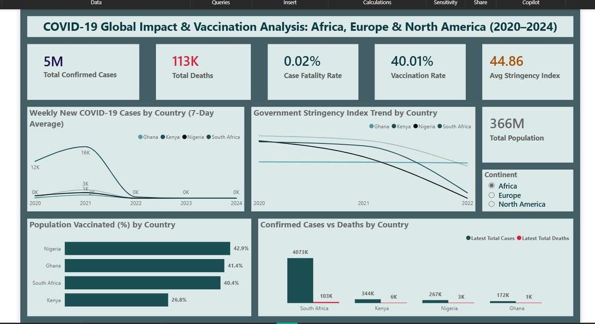
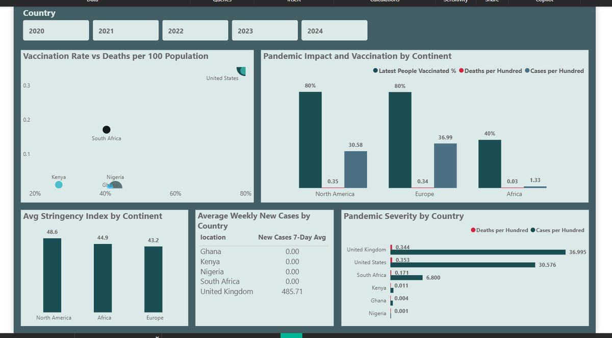
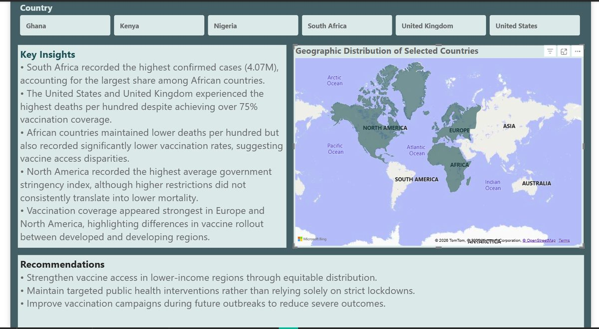

A three-page report comparing COVID-19 case severity, vaccination rollout, and government stringency across Africa, Europe, and North America — Ghana, Kenya, Nigeria, South Africa, the UK, and the US. Data was cleaned and validated in SQL before building the Power BI report.
5MTotal Confirmed Cases
113KTotal Deaths
0.02%Case Fatality Rate
40.01%Vaccination Rate
44.86Avg Stringency Index
366MTotal Population

Executive Dashboard — case trends, stringency index, and total population

Comparative Analysis — vaccination rate vs deaths per 100 population

Insights & Recommendations — key findings and geographic distribution
Key Findings
South Africa recorded the highest confirmed cases (4.07M) among African countries.
The US and UK had the highest deaths per hundred despite 75%+ vaccination coverage.
African countries had lower deaths per hundred but also far lower vaccination rates.
Stricter government stringency did not consistently translate into lower mortality.